Fotografia
Registros que contam histórias, capturam movimentos e valorizam momentos.
↗PORTFÓLIO CRIATIVO · 2025
Fotografia, design gráfico e desenvolvimento web. Três caminhos criativos, um olhar atento à comunicação visual.
Explorar projetos ↓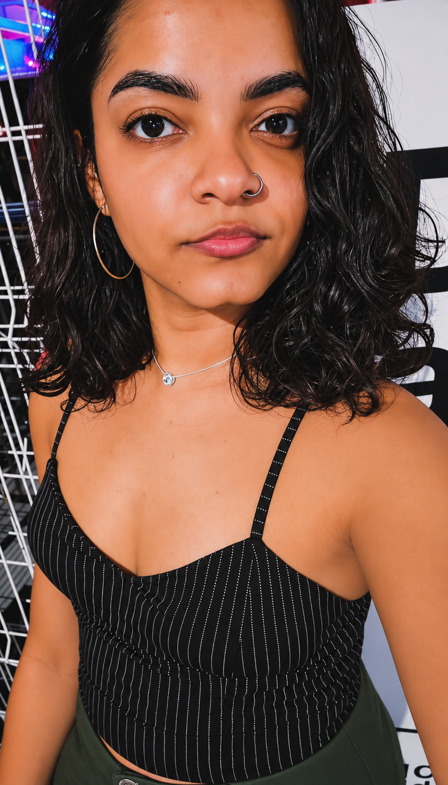
DS✳Sou uma pessoa criativa apaixonada pelo universo visual. Atuo nas áreas de fotografia, design gráfico e desenvolvimento de sites, explorando diferentes formas de transformar ideias em experiências visuais.
Registros que contam histórias, capturam movimentos e valorizam momentos.
↗Identidades visuais e composições que conectam ideias, formas e mensagens.
↗Sites e experiências digitais que equilibram visual, organização e funcionalidade.
↗Uma seleção de projetos e registros em diferentes formatos e linguagens.
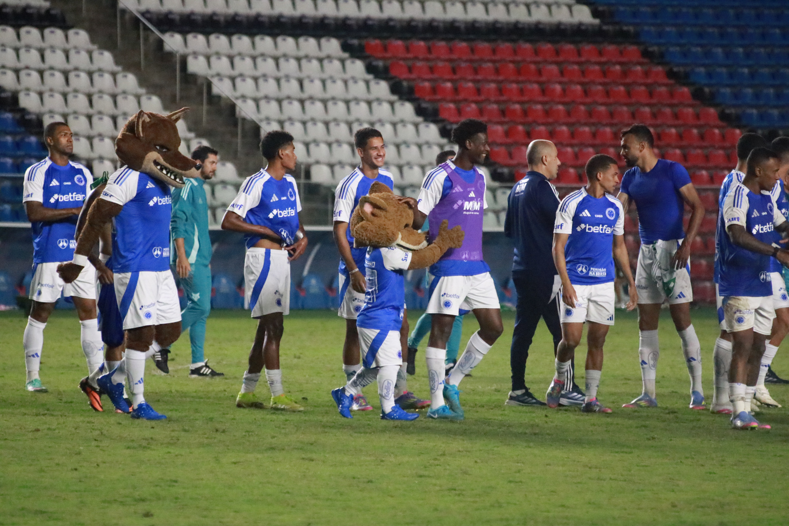
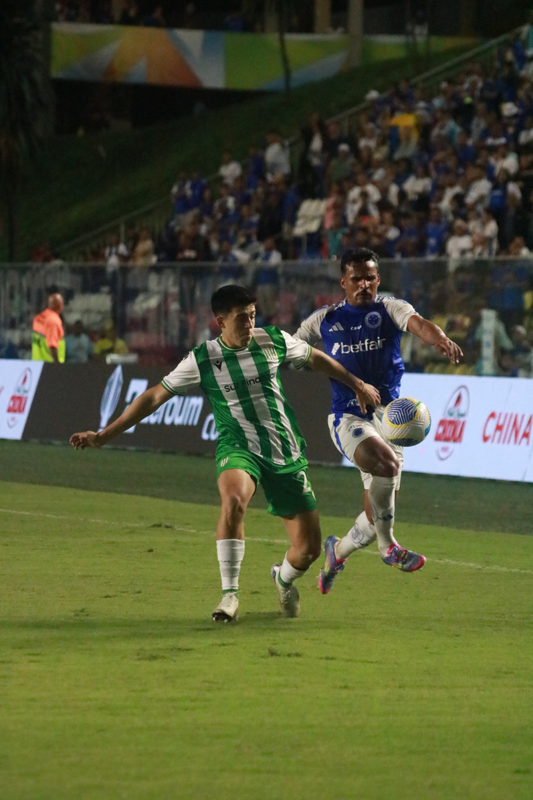
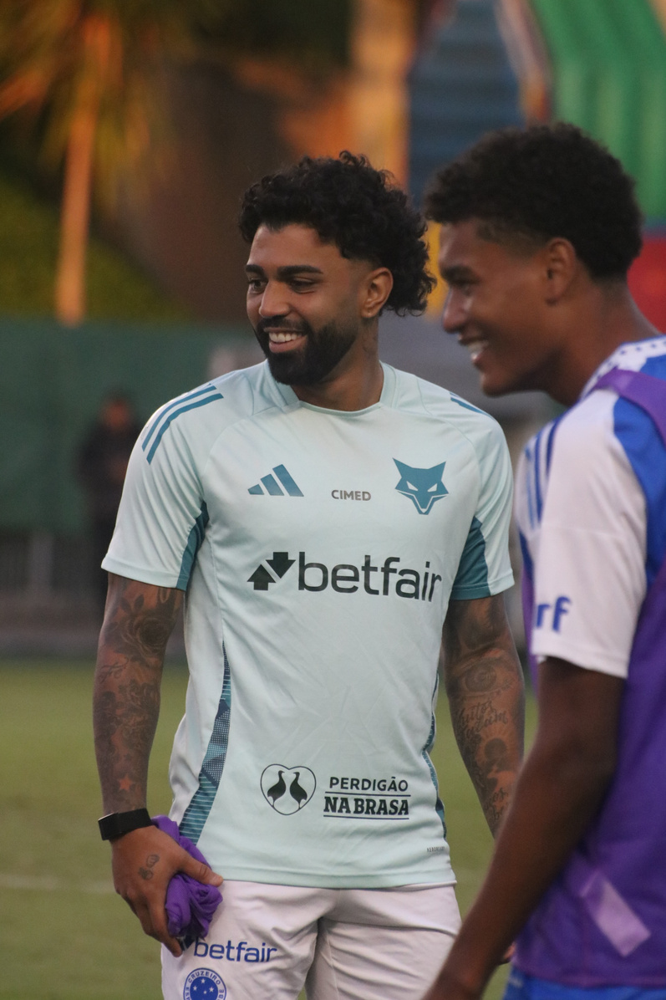
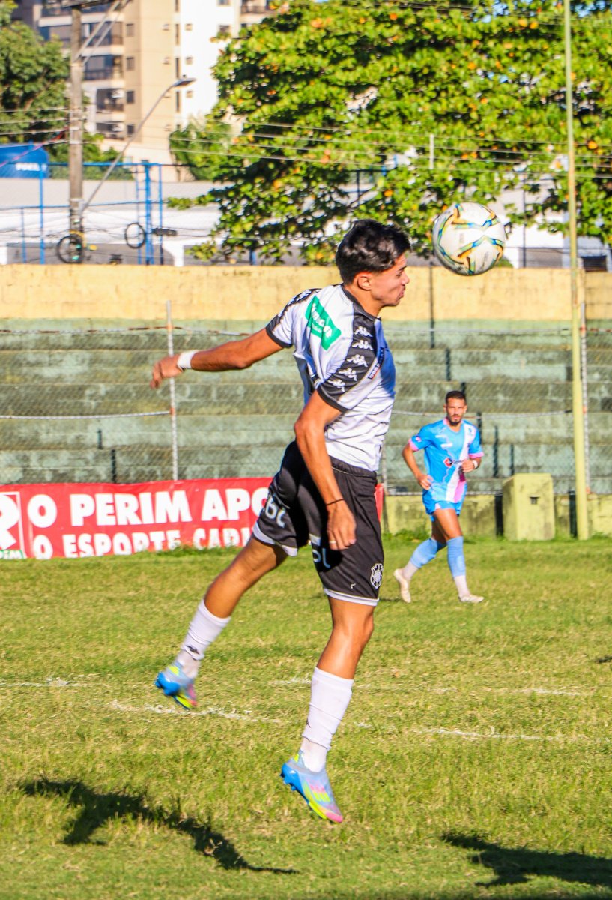
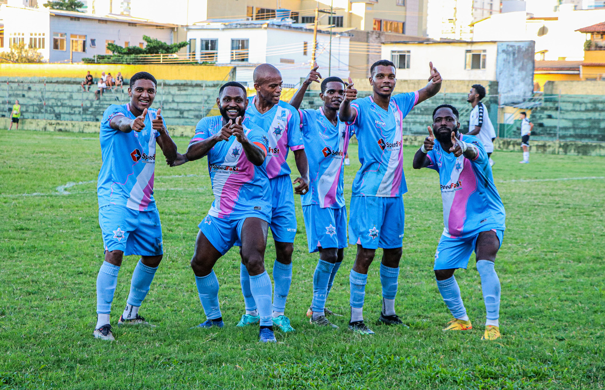
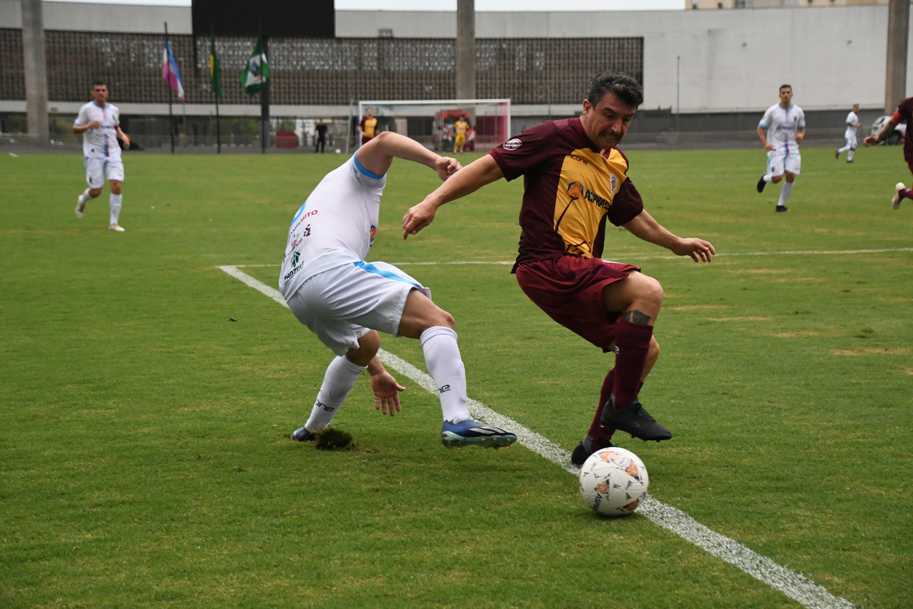
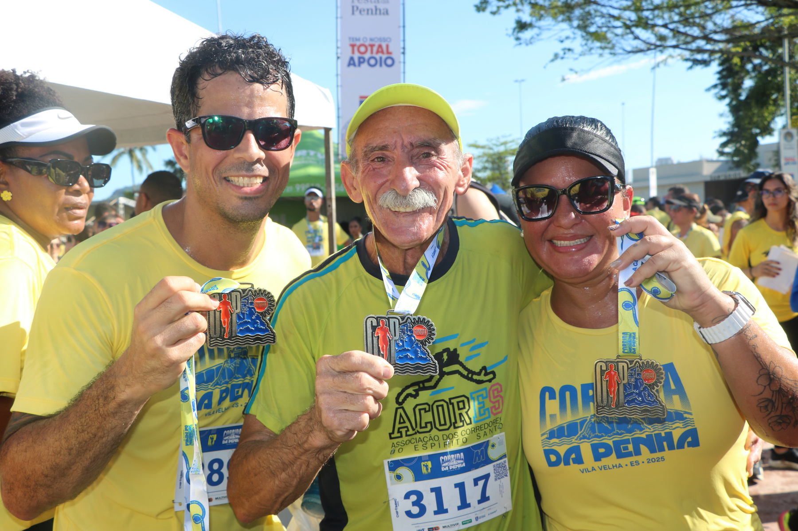
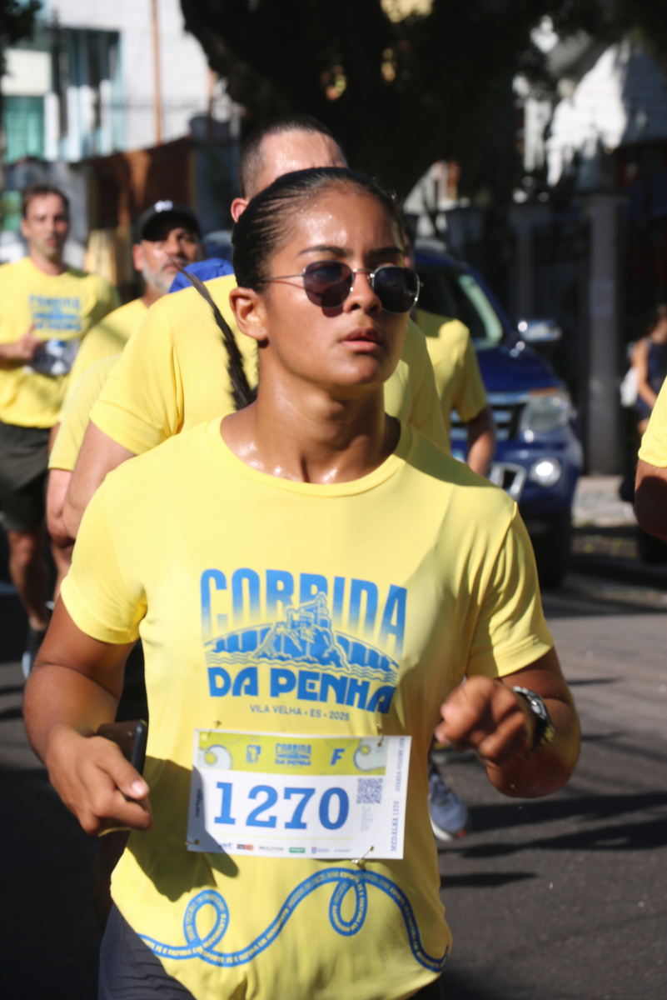
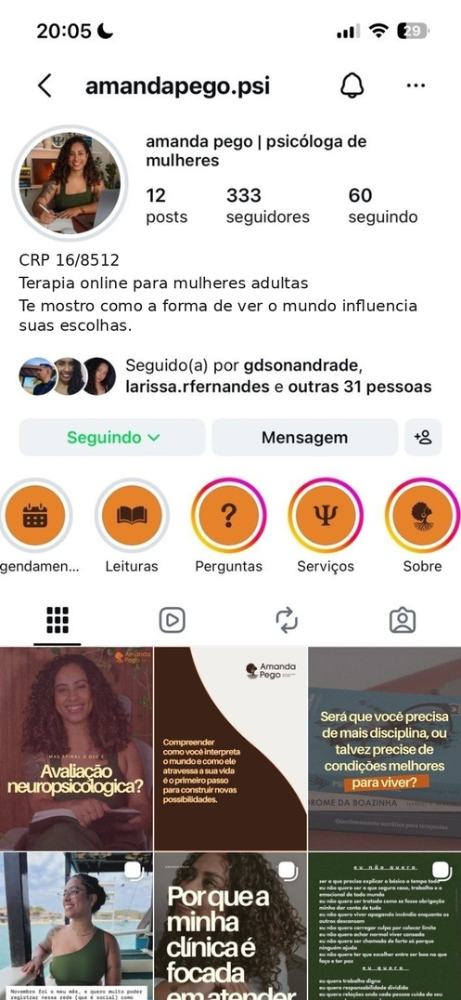
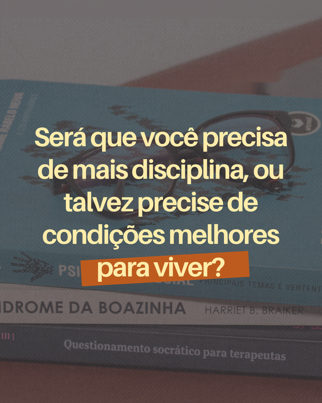
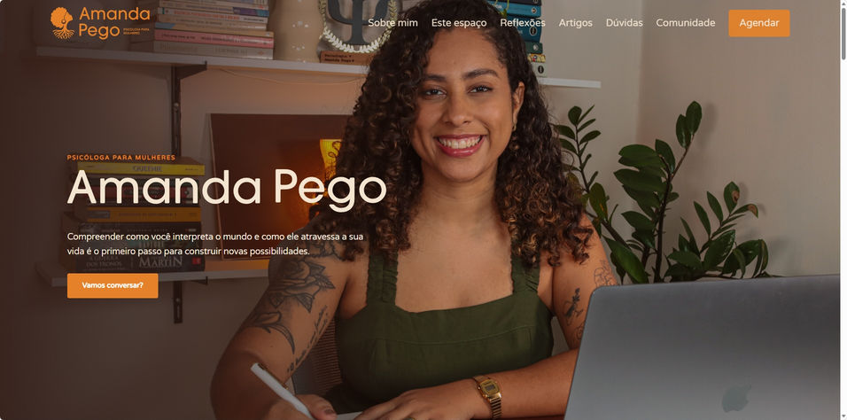
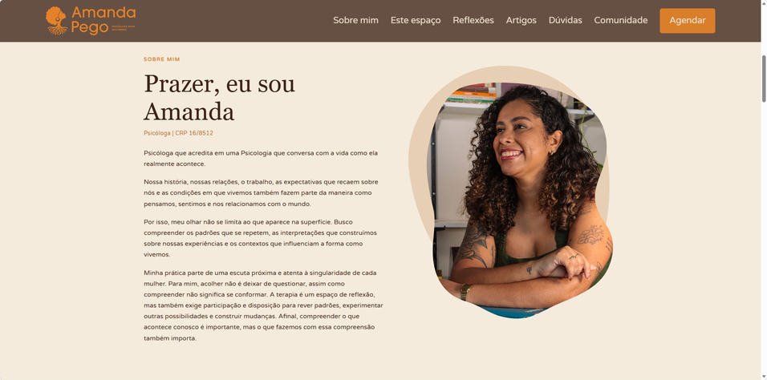
PROJETO DE SITE
Projeto de presença digital desenvolvido para apresentar o trabalho, os conteúdos e os serviços da profissional em uma experiência web.
LAYOUT · CONTEÚDO · WEB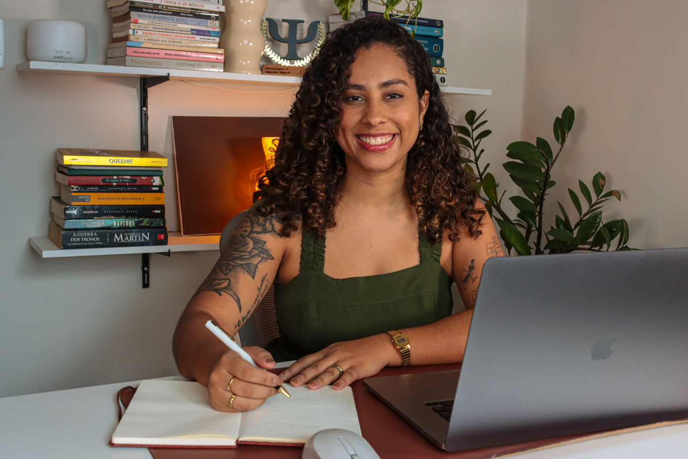
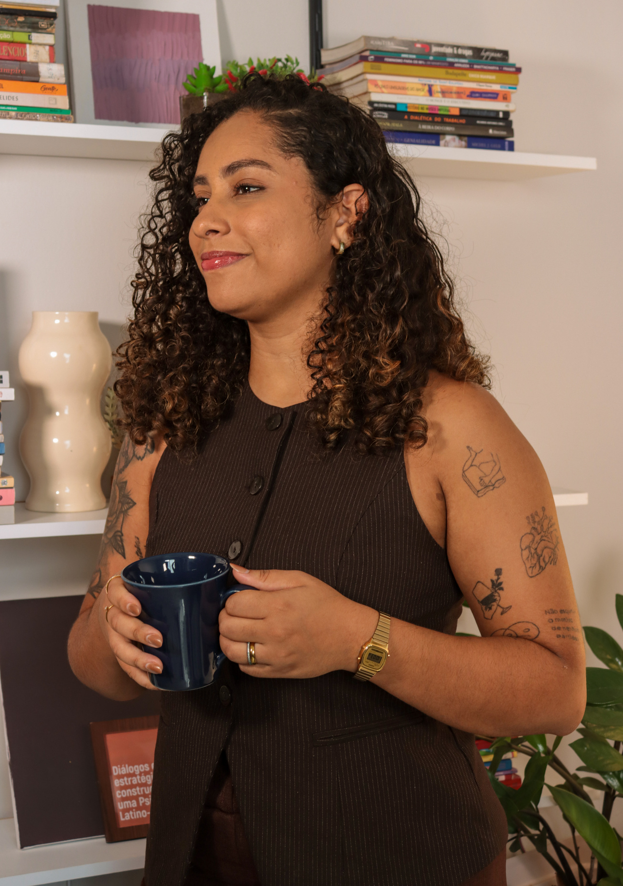
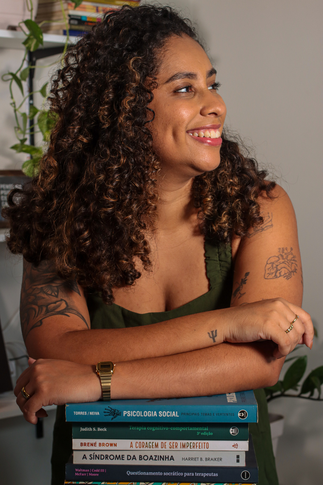
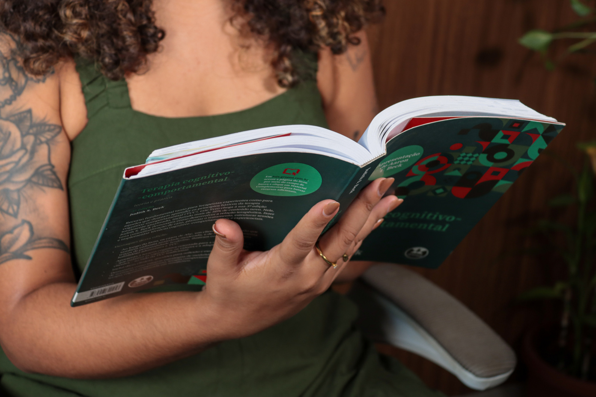
TEM UM PROJETO EM MENTE?
Entre em contato para conversar sobre ideias, projetos e possibilidades de colaboração.